The estuary
A peaceful trip through the mangrove channels.
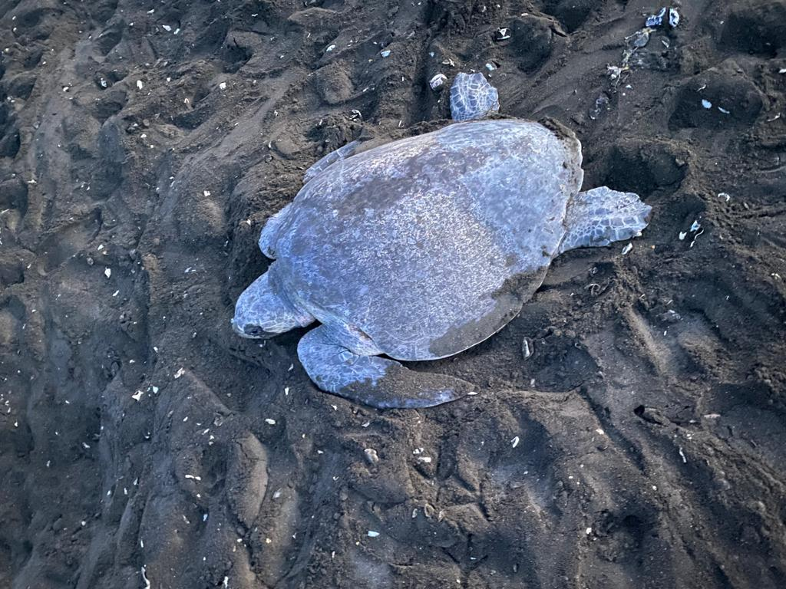
GUANACASTE · COSTA RICA
Discover the Tamarindo estuary and the wildlife of Las Baulas National Marine Park on a locally guided tour.
Plan your visitFollow the mangrove channels and discover an ecosystem full of life. Every trip is different: the landscape, tides and wildlife shape the journey.
With Chelonia Tours, explore nature through local knowledge and with respect for the species that call this place home.
Talk to your guideA peaceful trip through the mangrove channels.
Look for wildlife in its natural habitat.
Ask about a private, personalized tour.
Choose an experience to explore the details, seasonal notes and what's included.
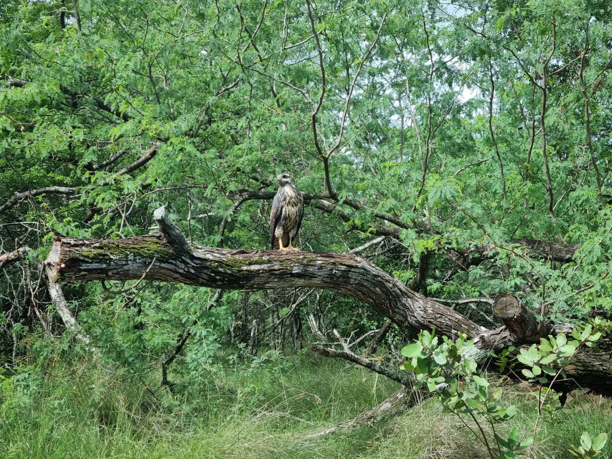
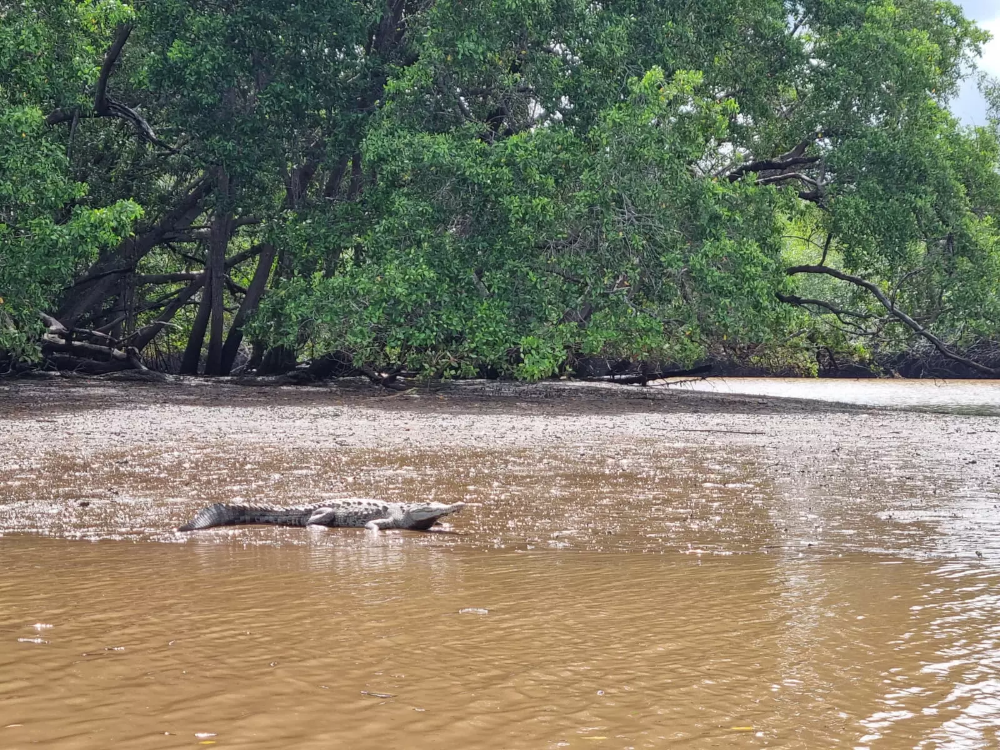
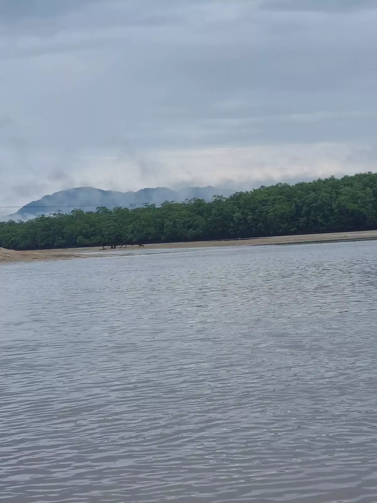
YEAR-ROUND · LAS BAULAS NATIONAL MARINE PARK
Explore the park's mangrove ecosystems and winding channels. Look for exotic birds, black howler monkeys, crabs and crocodiles while learning about the estuary's remarkable flora and fauna.
Bilingual guide
Bottled water
Camera
Sunglasses
Sunscreen and repellent
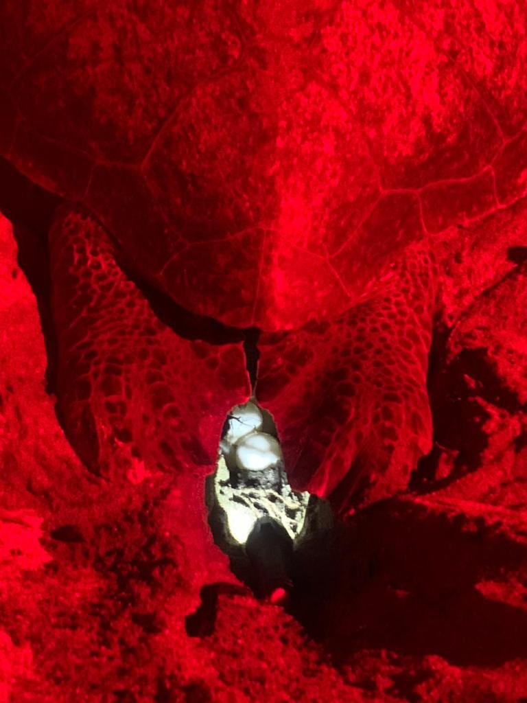
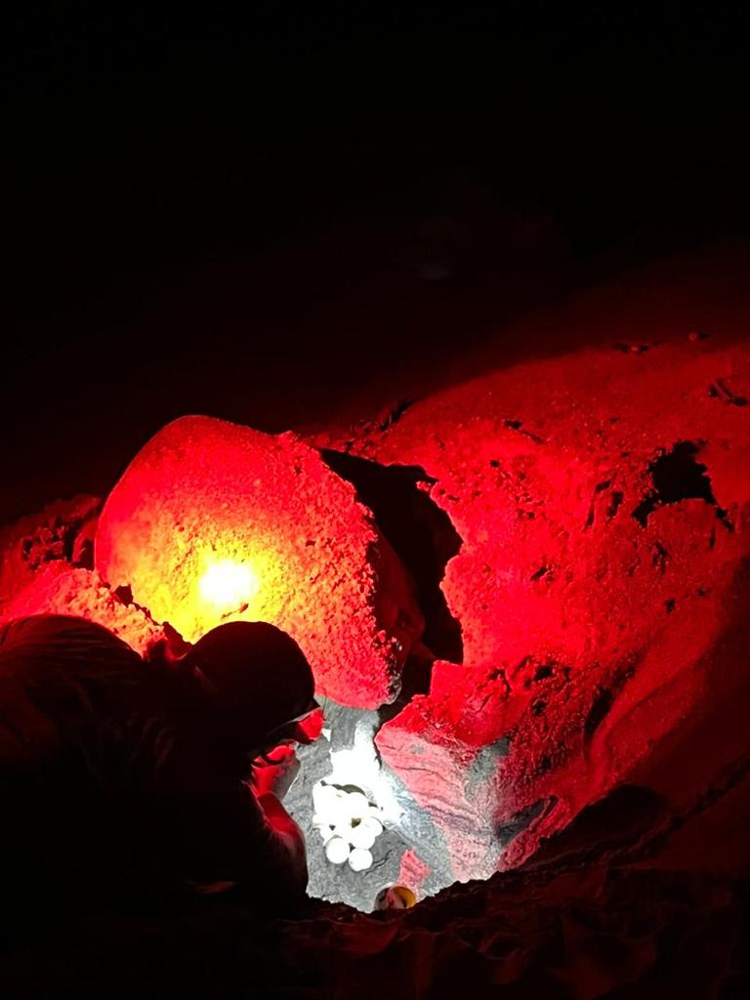
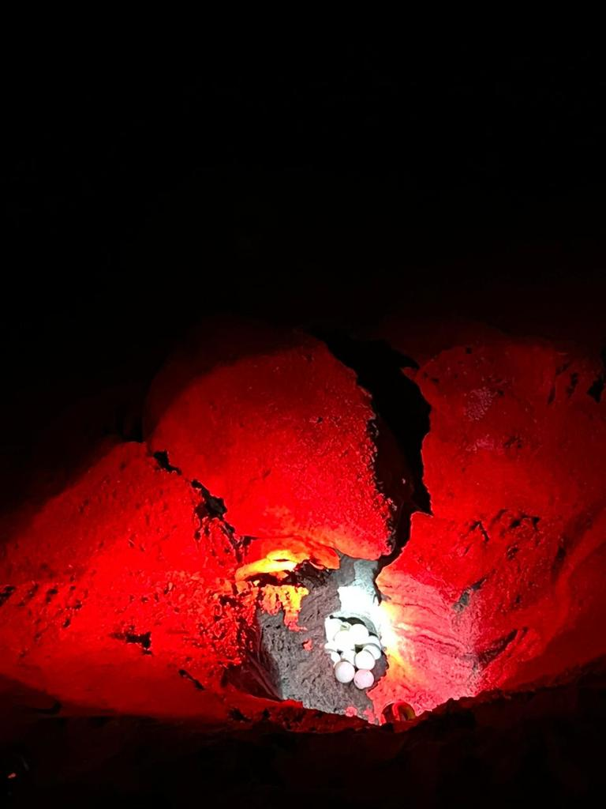
OCTOBER–APRIL · NOMBRE DE JESÚS BEACH
Depart Tamarindo at around 6:00 pm, at sunset, for Nombre de Jesús, a Guanacaste turtle-nesting beach. The drive takes about 40 minutes; the tour starts when you arrive.
Transportation
Bottled water
Camera without flash
Dark clothing
Insect repellent
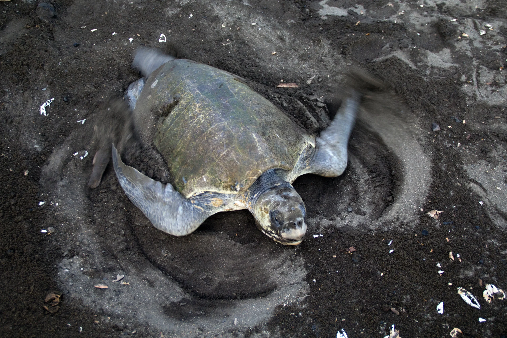
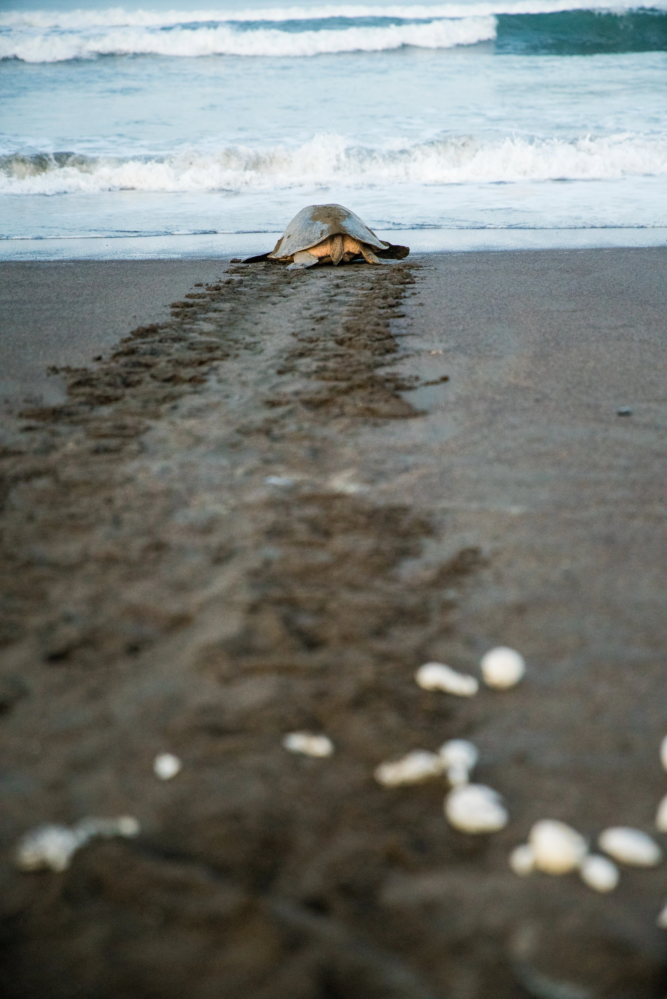
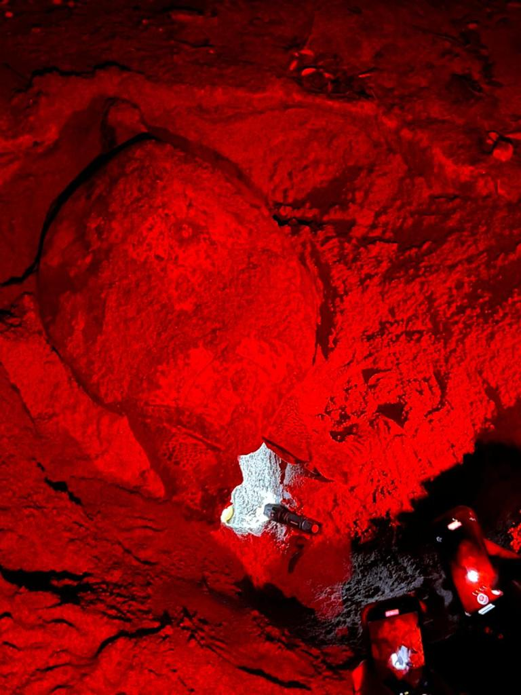
MAY–OCTOBER · OSTIONAL WILDLIFE REFUGE
Visit Ostional to learn about Olive Ridley turtles and one of Costa Rica's largest turtle arrivals. The drive from Tamarindo takes about 1 hour and 30 minutes.
Bilingual guide
Bottled water
Transportation
Camera without flash
Dark clothing
Insect repellent
Prices and schedules are subject to confirmation. Wildlife sightings and nesting activity are seasonal and cannot be guaranteed.
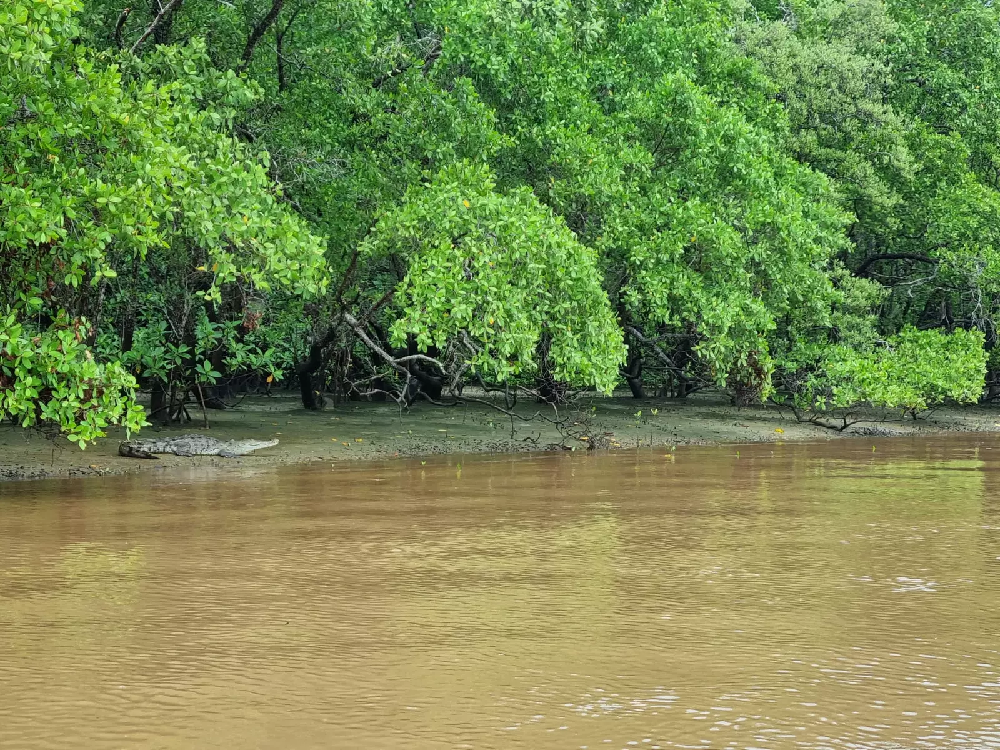
A glimpse of the landscapes and wildlife encounters that make every trip unique.
Wildlife sightings are spontaneous and cannot be guaranteed. We always observe from a respectful distance.
Dawin knows these waters and loves sharing the wonders of his Costa Rica. His experience turns every trip into an opportunity to see the estuary from a local perspective.
Message DawinExplore the Tamarindo estuary in Guanacaste, Costa Rica.
Open in Google MapsYOUR NEXT ADVENTURE STARTS HERE
Private tours · Ask us about schedules and availability